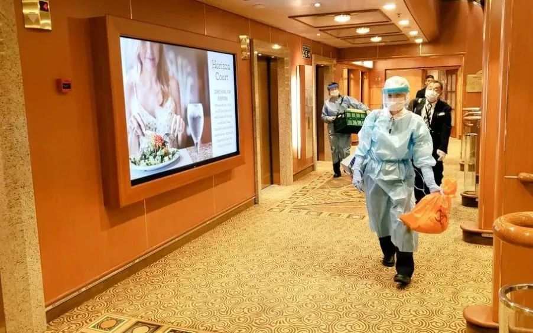
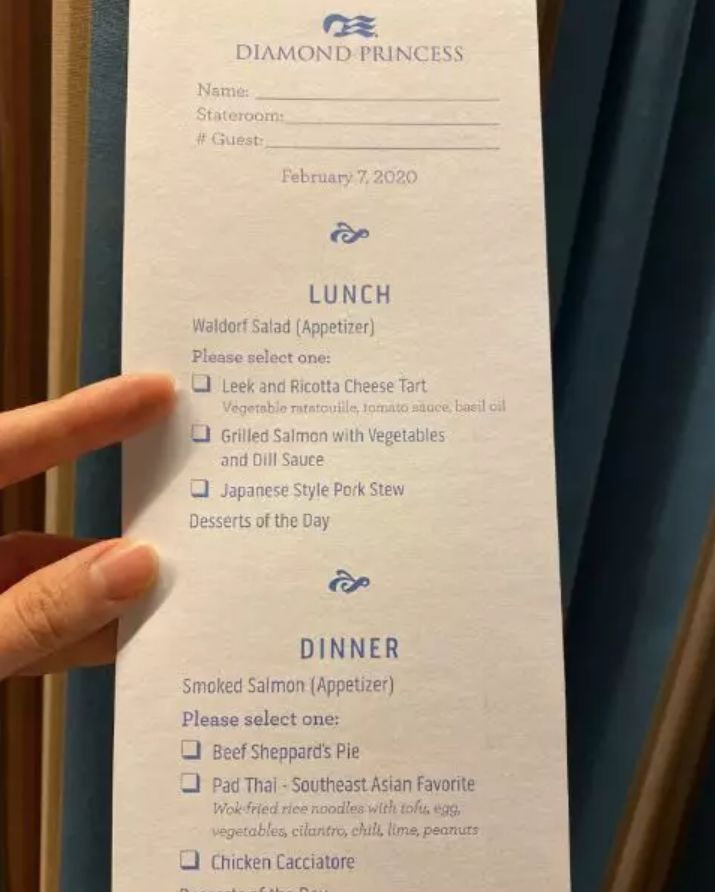
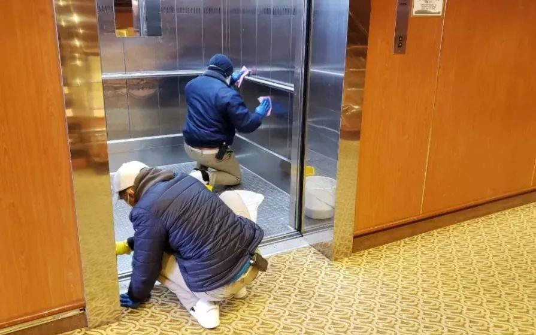
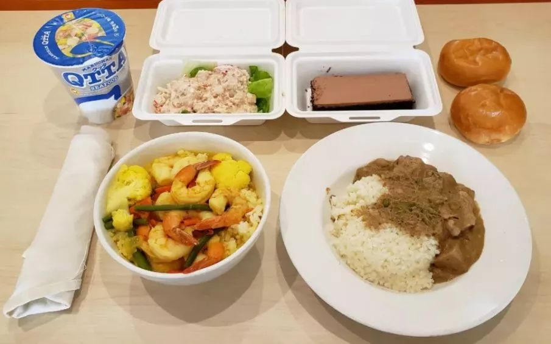

追踪钻石公主号：邮轮上有两名内地乘客，一人已确诊
原文链接 备份链接 _ 一名香港游客感染了新冠肺炎病毒，使得这艘邮轮的“春节之旅”演变为一场全球直播的公共卫生事件 _ 文 |《财经》记者 杨立赟 余乐 编辑 | 余乐 最近一周以来，停靠在日本横滨港的“钻石公主号”邮轮成为了全球关注的 …

船上人们的焦虑也与日俱增。艾丽告诉新京报记者，“我们觉得自己不是在被隔离，而是等待着被感染。”和乘客相比，船员的住宿条件更差，艾丽住的员工宿舍两人一间，仅几平米，没有窗户。
全文6300字，阅读约需12.5分钟
1月25日，大年初一，43岁的香港人黄雅曦一家七口抵达香港启德邮轮码头，准备乘坐当晚11时59分出发的“钻石公主号”邮轮，在海上庆祝新年。
这是一家人期待已久的长途旅行。黄雅曦说，公公已经78岁，小儿子才6岁，邮轮是适合全家出游的“最轻松的旅行方式”。
公开资料显示，公主邮轮是全球最大的邮轮公司嘉年华旗下品牌，而“钻石公主号”是公主邮轮旗下Grand（豪华）级别中最大的两艘邮轮之一。1月20日，“钻石公主号”由横滨出发，途经日本鹿儿岛，于1月25日抵达香港，在此停留一天、部分乘客上下船后，邮轮继续前往越南岘港、河内，台湾基隆，日本冲绳等地，最终于2月4日返回横滨，完整行程共计15天16夜。
一位邮轮工作人员告诉新京报记者，香港一向是客流量较大的中转地，从日本出发前往东南亚的邮轮都会在此停留，很多本地人会在这里上下船；香港机场又是国际机场，很多员工也会在这里轮换。
就在黄雅曦一家登船当日，一位80岁的男性香港乘客下船回家，并于五日后（1月30日）因发烧入院接受隔离治疗，后确诊为新冠病毒感染。据特区政府新闻公报，该男性发病日期为“2020年1月23日”，当时，这名男性正在“钻石公主号”从日本鹿儿岛前往香港的途中。
这一疫情通报引起了有关方面的警觉。2月3日晚，“钻石公主号”结束行程抵达横滨，日本厚生劳动省检疫人员立刻上船开始通宵检查。几天来，确诊感染新冠病毒的人数不断上升，截至目前，该邮轮上确诊病例已增至135例（注：据央视消息，“钻石公主”号邮轮相关的新冠肺炎感染人数为174人，135例为船上确诊数）。
公主邮轮在回复新京报记者的邮件中表示，钻石公主号1月20日从日本横滨出发的航次上，共有2666名来自世界各地的乘客和1045名船员。另据央视从中国驻日本大使馆获悉，船上有中国内地人员22人，包括2名乘客和20名船组成员，有260名香港乘客、5名澳门乘客、20名中国台湾乘客。确诊的135例中，有1名中国内地乘客、3名香港乘客、1名台湾乘客，均已送往医院。
据日本NHK报道，为防止疫情蔓延，日本厚生劳动省要求其余3600多名乘员继续留在船内，如无特殊情况，从2月5日起必须在客房等处隔离14天。截至发稿，“钻石公主号”上乘员已在船上隔离一周。

▲2月4日，隔离前夜，船上不断有身穿隔离衣的防护人员走动。由网友 @data_tw提供
━━━━━
邮轮启航：渐渐放松警惕
1月25日上午10时30分，邮轮开始办理登船手续。
等待时间颇长，黄雅曦注意到，排队人群中，自己是少有的戴口罩的乘客。此前，香港陆续爆出的5宗新冠肺炎确诊案例让她提高了警惕。登船前，她为家人备足了船上用的口罩和消毒洗手液。
下午两点，黄雅曦一家终于登上了邮轮。他们订了11层的三间内舱房，原本还担心没有新鲜空气，但疫情暴发后，她却不禁庆幸，“我们房间没有窗口，都是密封的。”
香港人劳允若（化名）和家人、朋友们订了11层的7间房。他们一行14人，由来自香港、澳门的六个家庭组成。
因团队中有不少老年人，劳允若也在出发前提醒大家戴口罩，“香港新闻一直在报道肺炎疫情，提醒市民出门要戴口罩，我们知道很严重。”
就在黄雅曦、劳允若登船的当天下午，香港行政长官林郑月娥在记者会上宣布，疫情对本地社群健康风险“高而迫切”，应变级别由当时的“严重”，提升至最高的“紧急”级别。
然而，上船后，劳允若发现，船上大多是外国人，戴口罩的人很少，“慢慢我们也松懈了，只在到了越南等地上岸时才戴。”
黄雅曦却依然警惕，“我们尽量不在人多时去餐厅吃饭，只要去人员密集的地方都要戴口罩。”
钻石公主号的日常管理让黄雅曦放心，“船公司让我们遵守规则，吃饭前一定要洗手消毒才可以进食。从上船开始就非常严格。”
最初的邮轮生活和想象中一样愉快。黄雅曦一家人没有在每个港口都下船游览，“船上的项目多到玩不过来，我们一家喜欢做健康运动，白天会一起上健身班，一起游泳，晚上看节目。”
“钻石公主号”上娱乐项目极其丰富。据其官网介绍：您可以在Kai寿司 (特色餐厅) 品尝新鲜制作的生鱼片，驻足富丽堂皇的中庭广场观看街头表演，或是去往公主剧院欣赏一场气势恢宏的演出。海上大型日式汤浴，也将为您呈献出类拔萃的精致服务。
而劳允若则坚持在每个港口都下去游览一番，“在岘港，我们14个人租了一辆中巴游览景点；到了有‘海上桂林’之称的下龙湾，我们租了个小船；在基隆，我们有人去了台北101，有人去了台北故宫博物院。”
他们此时尚不知道，1月30日，“钻石公主号”从河内出发前往基隆的这段时间里，曾在1月25日下船的80岁男性香港乘客开始发烧，同日到香港明爱医院急症室求医，并入院接受隔离治疗。

▲2月7日，邮轮上的餐食单。受访者供图
━━━━━
航行途中：来了个“坏消息”
在返航前的最后一站日本冲绳，劳允若发觉，海关检查变得繁琐起来。
2月1日下午1时，“钻石公主号”抵达冲绳。劳允若回忆，入境前需要领取两张宣传单，上面是有关新型冠状病毒的详细资料。选择下船入境的乘客还会收到一张询问单，内容包括是否去过湖北、武汉，是否有发烧或其他症状等，海关人员也会逐个对乘客当面进行询问。
而在此之前的其他港口，劳允若说，“我们只要提前填好健康申报表，出去连同电子签证出示给海关人员，很快就办好了。”
当时，新冠肺炎疫情已经在全球蔓延开来。共有来自亚洲、北美洲、欧洲、大洋洲和南美洲的23个国家报告了确诊病例。截至1月31日，日本也已确诊17例新冠肺炎。
由于手续繁琐，整个下船入境的过程持续了约5个小时，劳允若直到下午6点才真正入境，晚上10点多又要回船，“等待的时间比玩的时间还长。”
当晚，劳允若和黄雅曦不约而同地注意到了一条来自家乡香港的新闻，一位80岁香港男性确诊了新冠肺炎，而他曾经和自己乘坐过同一航次的“钻石公主号”邮轮。
据香港特区政府新闻公报，卫生署卫生防护中心正调查一宗新增新型冠状病毒感染确诊个案。该名80岁男病人居于新界葵涌邨绿葵楼，过往健康良好。他于潜伏期内没有到医疗机构、湿街市或海鲜市场，亦没有接触野生动物。
公报中提到了该病人的详细行程，“他于1月10日经罗湖口岸到内地逗留数小时，于1月17日乘飞机由香港前往日本东京，自1月19日起出现咳嗽，1月20日于横滨上船乘坐邮轮，1月25日抵达香港启德邮轮码头，1月30日开始发烧，同日到明爱医院急症室求医，并入院接受隔离治疗。病人已转送玛嘉烈医院接受进一步治疗，目前情况稳定。”
看到新闻后，劳允若第一时间和同行其他人讨论，但“当时以为他下船了就没事了。”
黄雅曦的反应更为激烈一些。她立刻回到房间戴上口罩，并找到船上服务人员一问究竟。黄雅曦回忆，工作人员告诉她，香港政府已经知会船方，船方会将发烧或自称有感冒症状的人士全部隔离，如果有进一步消息会及时通知。
船员艾丽（化名）告诉新京报记者，2月2日一早，在每日部门例会上，菲律宾籍主管告诉大家，“有个坏消息，可能出现了新的病毒。”并强调当天“要进行彻底的消毒。”
但这一消息并未立即通知给全体乘客。2月2日一整天，邮轮在海面航行，“每晚6、7点，七楼一间室内影厅内会有歌舞表演，一般会有一两百人观看，当天晚上照常进行。”劳允若说。
从看到新闻起，黄雅曦全家一直戴着口罩，但船上大多数人仍然没戴口罩。
直到2月3日下午4点左右，船方才第一次向全体乘客通报了疫情。劳允若记得，当时船长在广播中表示，“香港有个肺炎案例，是在下船后几天确诊的，我们现在正在加速，务求晚上8:30可以提前抵达横滨港口，所有乘客要接受日本政府的健康审查，工作人员将上船对每一位乘客进行体温测量及抽样检查。”

▲2月8日晚，“钻石公主号”上的工作人员很仔细地在清洁电梯。由网友 @data_tw提供
━━━━━
抵达横滨：开始疫情排查
2月3日晚8点，“钻石公主号”比原计划提前10小时抵达日本横滨港口。
日本厚生劳动省如临大敌。劳允若记得，当地卫生局的工作人员身着防护服、口罩、手套，登船给每个人测量体温，询问有没有发烧、流鼻涕、咳嗽等症状，若有症状则需接受进一步排查。
2月4日凌晨4时半，已接受完体温检测回房睡觉的黄雅曦一家三口再次被叫醒，日方检疫人员拿来棉签，采集了三人的咽拭子样本。
黄雅曦解释，“旅行途中，我的丈夫患有伤风症状，去船上的医护中心看过船医，因此日方拿到了他的资料。”
据日本NHK报道，检疫人员从273人身上提取了样本，并依次进行病毒检测，273人中，120人出现发热与咳嗽等症状，153人与出现症状者或与那名香港男性有过密切接触。
样本的采集和检测需要时间，2月4日天一亮，船上乘客就收到广播通知，检疫还在进行，全体乘客需在船上继续等待一天。
这天吃早饭的时候，劳允若注意到，邮轮上开始进行全方位认真消毒，在公共区域，一旦有人离开座位，清洁人员就会过去用消毒液擦拭。不过她发现，“员工还没有戴口罩和手套。”
艾丽则告诉新京报记者，从2月4日起，她就要求戴口罩，但“主管斥责我，还说会引起客人恐慌。”不过，她也有点理解主管，“外国人接触这次疫情很少，很不重视。就连我一开始也以为航线不经过中国内地就会安全。”
一位来自印尼的清洁服务生也表示，在船上公布疫情前，他从未听说过新型冠状病毒。不仅船员，直到2月4日晚间，邮轮上乘客在网上发布的图片中，用餐场所依旧人满为患，几乎没有人戴口罩。一位日本乘客在社交平台发布状态称，“我对（新型）冠状病毒一无所知。”

▲2月4日晚上八点，邮轮的餐厅依然人满为患，几乎无人戴口罩。由网友 @data_tw提供
在大家的困惑和等待中，第一批次检测结果出来了。
2月5日一大早，黄雅曦听到船长广播，“有10人确诊感染了新冠病毒”，并表示，“该船正在检疫中，我们要求您按照检疫当局指示，留在房间内，不得出入。”“我们被告知将花费14天以上时间。”
当晚公主邮轮在官网发布声明，再次印证了这一新消息。声明中称，“在已完成检测的样本中，有10人的新型冠状病毒检测结果呈阳性，其中包括2名澳大利亚宾客、3名日本宾客、3名中国香港宾客、1名美国宾客以及1名菲律宾船员。”“应日本厚生劳动省要求，钻石公主号将继续在横滨接受至少14天的隔离。”
▲日本卫生部门：资源有限 不可能为每位邮轮乘客进行新冠病毒检测。新京报我们视频出品（ID：wevideo）
这一通知打乱了不少乘客的后续出行计划。黄雅曦一家原计划从横滨下船后前往东京旅行，之后再返回香港，现在只能无奈退票。
让她后怕的是，黄雅曦在电视新闻中认出了一对已确诊的英籍夫妇。她记得，2月2日晚上，自己曾在船上酒吧内参与过一个猜谜游戏，而“那对夫妇就在我们附近。”
还算幸运的是，截至发稿时止，黄雅曦、劳允若和同伴们均无异常。

▲2月7日，船方为乘客发了温度计和橡胶手套，每日自己测量体温，超过37.5摄氏度需要上报。图片由网友 @data_tw提供
━━━━━
持续隔离：焦虑中的等待
检测结果出来当天，“钻石公主号”上的隔离正式开始。从2月5日起，船上的乘客食堂关闭，员工将食物送到乘客房间门口。
房间内的清洁也暂时告停。黄雅曦说，“船公司会将清洁垃圾桶放在门外，帮我们替换，吃过的餐食会放在门外，船员会清洁。”

▲2月11日中午，钻石公主号上供应的午餐。由网友 @data_tw提供
几天的隔离等待中，随着受检人员范围的持续扩大，确诊病例的数字也不断增加。
继第一批有10人确诊感染后，2月6日，新增10人确诊；2月7日，新增41人；2月8日，新增3人；2月9日，新增6人；2月10日，新增65人。截至目前，“钻石公主号”上的确诊病例已达135例。

▲2月7日，确诊病例一日新增41人，船下停满救护车，将确诊病例送往医院隔离治疗。受访者供图
船上人们的焦虑也与日俱增。艾丽告诉新京报记者，“我们觉得自己不是在被隔离，而是等待着被感染。”和乘客相比，船员的住宿条件更差，艾丽住的员工宿舍两人一间，仅几平米，没有窗户。
被“禁足”在房间内，黄雅曦和家人们只能靠看电视、听歌、看书消磨时间，“感恩我有一位很有耐性的儿子，在这几天没有发脾气。”
面对蔓延的焦虑情绪，公主邮轮在回复新京报记者的邮件中称，船上已为宾客开通了心理服务热线，由受过专业训练的心理顾问为精神压力大的宾客进行心理疏导。
同时，“隔离期间，船上增设了8个电视直播频道，另有60部电影将在24小时内增至舱房内的电视娱乐系统。此外，我们还在准备游戏、冷知识和谜题等娱乐活动，以供宾客在房内消遣。我们还提供38种新闻报纸（36个语种）供宾客阅读。我们也正与卫生相关机构协调，争取让每位宾客都能拥有固定的户外活动时间。”
固定的户外活动时间是乘客们口中的“放风”。从2月6日起，住在内舱的乘客每两天可以去甲板上“放风”一次。劳允若告诉新京报记者，每次出去一个楼层，单数房号的去7层甲板，双数去15层，人员要保持1至2米的间距，不能聚众。每层可以出去的时候会有广播通知。

▲2月8日，两天一次的“放风”成了乘客们最期待的事情。图片由网友 @data_tw提供
每次的“放风”是黄雅曦与父母、公婆难得的见面机会。“隔离第三天（2月7日），我们终于可以上甲板呼吸新鲜空气，妈妈告诉我有一些低落情绪，睡得不太好，所以要安抚两位老人家。”黄雅曦说。
2月9日下午，一位乘客在社交网络上更新了一张自己在甲板上的照片，配文“在外面一个小时！再次感觉像个人类！”

▲2月7日，船方为乘客发了折纸和数独来排解隔离期间的寂寞。图片由网友 @data_tw提供
除了心理上的焦虑，不少患有慢性病的乘客更担心的是缺药问题。2月9日，船上一位77岁的乘客杨先生告诉新京报记者，自己每天需要服用四种心脑血管和助眠类药物，但现在药物已经用尽，“头晕，吃不下饭，血压不稳定。”
杨先生表示，自己已经给船公司填写了表格，提交了药单，“船长说分药和送药由日本检疫部门负责，比较慢。”“我们长期病患者，真的是过日如度年。”
药物匮乏在中老年人居多的邮轮上是一个普遍问题。劳允若一行中有8个人需要长期服用心脑血管类药物，黄雅曦的父亲也需要降压药，“还有一天就没有药了，而且他很容易血压高，希望船方可以提供设备检测一下血压。”
关于这一问题，2月10日，公主邮轮在回复新京报记者的邮件中称，“日本政府正为我们的船只和船员提供额外的人力支持，包括7000个防护口罩和由16名医生、12名护士及医疗接待人员构成的专业医护团队……我们也在为有需求的宾客提供相应的药品。目前我们已收到大约2000份药品补缺申请。这些申请将根据需求和紧急程度来决定优先次序。日本厚生劳动省正竭尽所能地帮我们在当地采购相关药品。”
▲日本成立对策总部撤离“钻石公主”号患者 并协调转移至各地医院。新京报我们视频出品（ID：wevideo）
2月10日下午，开始有部分乘客收到药物。乘客徐女士表示，自己收到了3种药，“与香港的药略有不同，只能先用着。”但仍有不少人处于缺药状态，一位乘客告诉记者，“隔壁的江伯已经一个礼拜没有药吃，80几岁了。”
2月11日下午，更多药物发放了下来，劳允若说，他们当中8位老人全部拿到了药物，“真是万幸啊！”
▲“钻石公主”号邮轮确诊135例 老人及慢性病乘客或将被允许下船。新京报我们视频出品（ID：wevideo）
有些乘客开始苦中作乐。一位外国博主在社交平台上注册了新账号，名为“被隔离在钻石公主号上（quarantined on diamond princess）”，开始记录在邮轮上的隔离生活。
2月9日晚间，他发布了一段几天前拍摄的视频：当时邮轮尚未抵达横滨，乘客合唱团正投入地唱着一首日本民歌，其中不乏戴着老花镜的银发老人。他们拿着打印出来的歌词，认真地跟着旋律轻轻点头、晃动身体。整个大厅和楼梯上都站满了乘客，屏息倾听。
他写到，“那原本应该是我们在船上的最后一天，这是我第一次邮轮旅行，如此美好的时刻真的令人惊讶。”
新京报记者 李云蝶 编辑 王婧祎 校对 卢茜
点击下图进入”全国新型冠状病毒感染肺炎实时地图“

*值班编辑 吾彦祖 花木南*


本文未经新京报书面授权不得转载使用
欢迎朋友圈分享

原文链接 备份链接 _ 一名香港游客感染了新冠肺炎病毒，使得这艘邮轮的“春节之旅”演变为一场全球直播的公共卫生事件 _ 文 |《财经》记者 杨立赟 余乐 编辑 | 余乐 最近一周以来，停靠在日本横滨港的“钻石公主号”邮轮成为了全球关注的 …
原文链接 备份链接 2月5日，因船上有乘客被检验出新冠病毒感染，停靠在日本横滨港口的“钻石公主号”上的3600多人开始了14天的海上隔离。截至2月12日，这艘邮轮上的确诊感染者已达174人，远超日本本土的确诊感染总数，“钻石公主号”事件已 …
原文链接 备份链接 【财新网】（记者 王婧）连续三户人家确诊新冠肺炎后，广州市海珠区一栋住宅楼全体住户于2月11日晚上接到通知，所有人员将被转移至定点酒店，实施集中隔离医学观察。2月12日凌晨，广州市海珠区通过官方微博确认上述信息。 …
原文链接 备份链接 我也是个普通人，也会恐惧。但我是一名医务工作者，同时是一名党员；我们黄冈的疫情是全国城市里除武汉之外最重的几个之一，这样的困难情况下，我们不去，谁去？必须要坚持，一定要挺住。 口述 | 陈 林 整理 | 王 煜 我是湖 …
原文链接 备份链接 题目叫“回武汉记”，其实人还在潜江，一步也走不了。所以应该叫“准备回武汉记”。希望下周的记录，是真正的回城记。 2月4日，正月十二。 隔离十四天结束，写了十四天日记。接下来的记录，应该叫“回武汉记”——虽然回武汉还没有 …